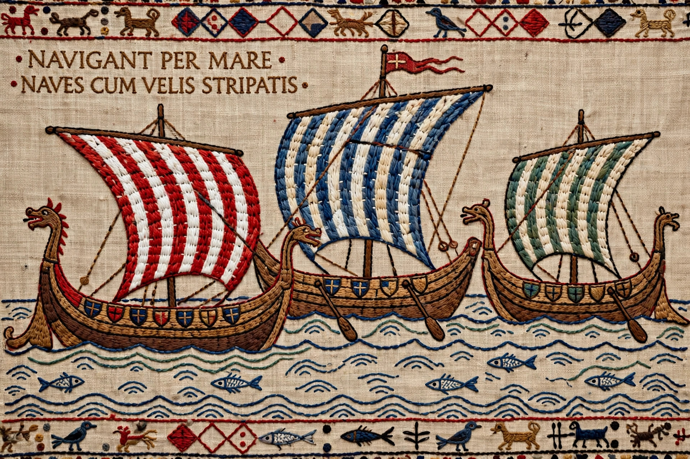

The Bayeux Tapestry is an embroidered cloth nearly 70 metres (230 feet) long and 50 centimetres (20 inches) tall that depicts the events leading up to the Norman Conquest of England in 1066, culminating in the Battle of Hastings. Despite its name it is not a woven tapestry but crewel embroidery in wool yarn on linen, probably made in England in the 1070s, most likely commissioned by Bishop Odo of Bayeux, William the Conqueror's half-brother.
| Bayeux Tapestry | |
|---|---|
 The Norman fleet crossing to England | |
| Date | c. 1070s |
| Medium | Wool embroidery on linen |
| Dimensions | c. 68.4 m × 0.5 m (surviving) |
| Location | Bayeux Museum, Normandy, France |
The narrative, captioned with Latin tituli, runs from Harold Godwinson's journey to Normandy in 1064/65 and his oath to William, through Harold's coronation, the appearance of Halley's Comet (shown as an ill omen), the building and sailing of the Norman invasion fleet, to the Battle of Hastings, where Harold is shown struck in the eye with an arrow and cut down. The final scenes are lost. Borders above and below carry animals, fables and scenes of rural life, some commenting on the action.
First recorded in a 1476 inventory of Bayeux Cathedral, the tapestry was displayed annually in the cathedral nave. It survived the French Revolution (when it narrowly escaped being cut up for wagon covers), was studied under Napoleon — who saw propaganda value in it — and was seized by the Nazi Ahnenerbe in 1941 before being recovered from the Louvre in 1945. As a near-contemporary pictorial narrative it is an unparalleled source for eleventh-century ships, armour, buildings and daily life, and an enduring icon of the Norman Conquest. It is inscribed in UNESCO's Memory of the World register.
Harold Godwinson · William the Conqueror · Norman Conquest · Battle of Hastings